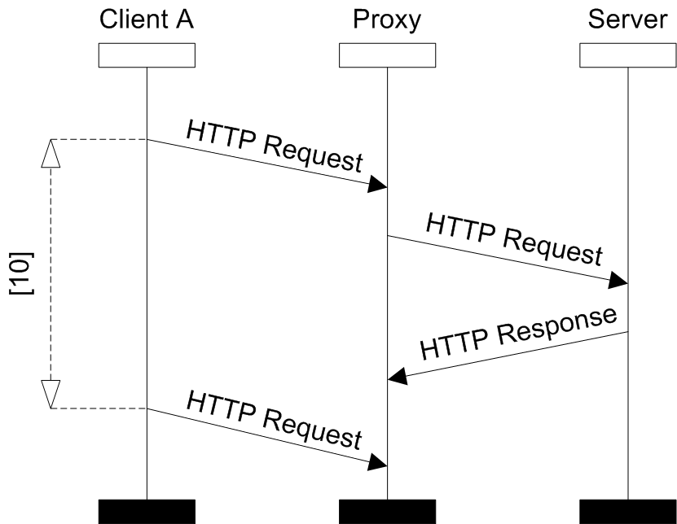
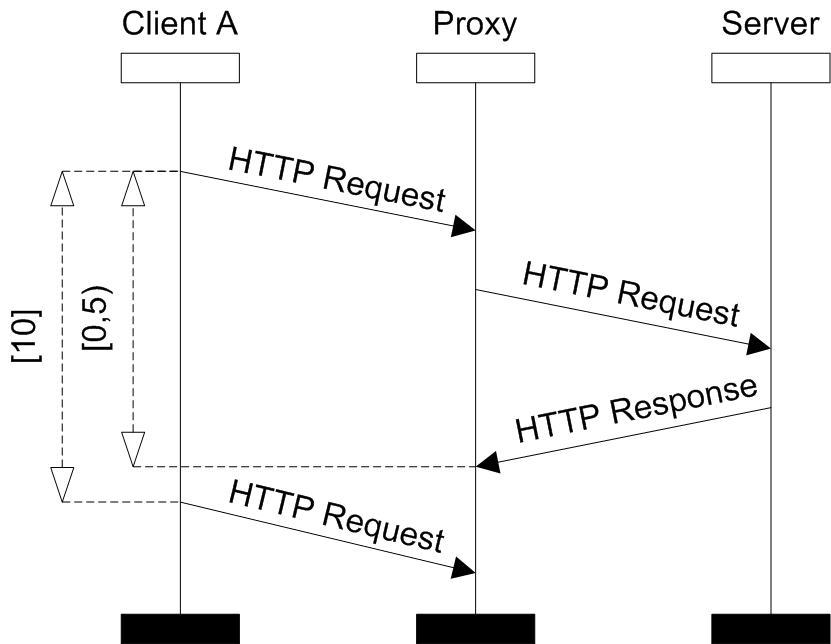
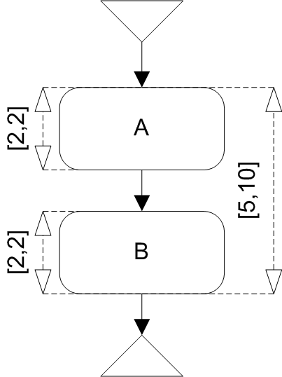
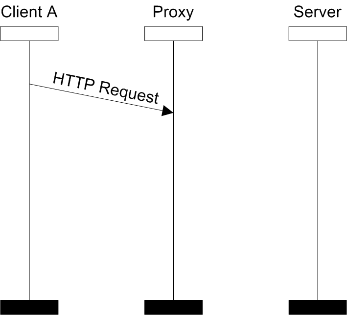
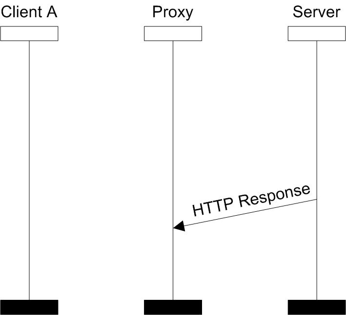

Time Race
The introduction of time constraints can eliminate some race conditions. For example consider the next two pictures. On the first one there is a time race between HTTP Request and HTTP Response receive events. However on the second one the added time constraint caused that the BMSC is time race free (the receive event of HTTP Request surely happens after the HTTP Response receive event).
-
- 
- BMSC with the time race
-
- 
- Time race free BMSC
BMSC B (resp. HMSC path p) contains time race if there are two visually ordered events in B (resp. p), but there exists time assignment which assigns the visually preceding event larger time value than the value assigned to the subsequent event.
An HMSC contains time race if there exists path which contains time race.
The time assignment for BMSC (resp. HMSC path) is an assignment of time value to every event such that it satisfies all constraints in given BMSC (resp. HMSC path). I.e. for every constraint which restricts two events, the difference of values assigned by the assignment to these events must be included in the interval set of this constraint.
Time Race algorithm checks the same as the race checker, but takes into account also time constraints.
The next example shows HMSC which contains race condition (between HTTP Request and HTTP Response receive events), but which is time race free. Due to time constraints the HTTP Requestreceive event happens always before the HTTP Response receive event.
-
- 
- Example of time race free HMSC
-
- 
- BMSC A
-
- 
- BMSC B